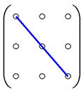
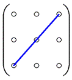

1.3.1 Виды матриц
Матрицей размерности  называется
прямоугольная таблица чисел
называется
прямоугольная таблица чисел  :
:
называется
прямоугольная таблица чисел :
Матрица
размерности m на n
.
Частные виды матриц
– матрица-строка,
– матрица-столбец,
– квадратная нулевая,
– квадратная диагональная,
– единичная,
 – верхняя треугольная,
– верхняя треугольная, – нижняя треугольная.
Главная и побочная диагонали
,.